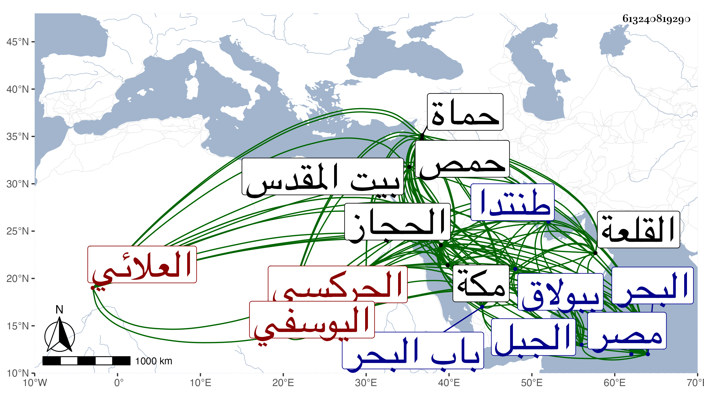

0902Sakhawi.DawLamic.ITO20230111-ara1.EIS1600.613240819290
Biography ID: 613240819290
287
جقمق الظاهر أبو سعيد الجركسي العلائي نسبة للعلاء علي بن الاتابك ، اينال اليوسفي لكونه اشتراه من جالبه إلى مصر الخواجا كزلك وهو صغير ورباه وأرسله إلى الحجاز صحبة والده ثم أعتقه وبقي عنده مدة حتى عرفه أخوه جركس القاسمي المصارع الماضي قريبا . فكلم أستاذه الظاهر برقوق في طلبه له من سيده ففعل وأعطاه اياه من غير أن يعلمه بعتقه فدفعه الظاهر لأخيه أنيا في طبقة الزمام وأنعم عليه بخيل وقماش ثم جعله خاصكيا بعد ايام كل ذلك بسفارة أخيه ولذا ينتسب ظاهريا أيضا ثم صار في الدولة الناصرية ساقيا ثم أمير عشرة ثم قبض عليه الناصر وحبسه بالقلعة لما خرج أخوه عن الطاعة ثم أطلقه واستمر إلى أن اعطاه المؤيد إمرة عشرة ثم طبلخاناه وجعله خازندارا بعد يونس الركني الأعور ثم صار بعد المؤيد أحد المقدمين ثم استقر في الحجوبية الكبرى أيام الاشرف برسباي ثم نقله في سنة ست وعشرين إلى الأخورية الكبرى وباشر حينئذ نظر الخانقاة الصلاحية سعيد السعداء وكان ينوب عنه فيه الغرس خليل السخاوي أحد أخصائه ثم نقله إلى امرة سلاح ثم إلى الاتابكية واستمر فيها إلى ان مات الاشرف بعد أن أوصاه على ولده المستقر بعده في السلطنة والملقب بالعزيز ، وصار صاحب الترجمة نظاما إلى أن خلع العزيز بعد يسير وتسلطن في يوم الاربعاء تاسع عشر ربيع الاول سنة اثنتين وأربعين واتفق في ذلك ثم في أوائل دولته ما عرف من محاله إلى أن صفا له الوقت وظهر بتملكه صحة ما حكاه النجم بن عبد الوارث البكري المصري المالكي أنه في حدود سنة أربع وثمانمائة جاء شخص اسمه جلال إلى البرهان بن زقاعة الغزي ليشفع له عند الناصر فرج في قضية فأركبه على فرس فحل حبشي عال أصفر معصم بسواد حسن المنظر قال النجم فأعجبني ذلك الفرس جدا فقلت للبرهان لمن هذا الفرس فقال لمن سيصير ملكا قال فسألت عنه فقيل لي انه لجقمق أخي جركس هذا مع انه حينئذ لم يكن في أهل هذه الزمرة بل كان يظهر الوله والتعامي الزائد والتغفل عن أحوال الناس والتعاطي للأسباب التي تقلل غالبا الهيبة من مزيد التواضع وسائر ما ينافي أحوال الملوك ولكن قد ظهرت كفاءته وبهرت حسناته وكذا بشر به قديما جماعة منهم الشيخ المعتقد الزين عبد اللطيف بن عبد الرحمن الانصاري الخزرجي ويعرف بابن غانم ووعده إن ولي ببناء زاوية له في القدس فما اتفق ورام حين سلطنته أن يتسمى بمحمد تشرفا ويبطل اسمه ثم رأى الجمع بينهما لما خيل من طمع الملوك فيه لظنهم كونه من غير الاتراك وكتب كذلك على أبواب كثيرة من الأماكن المجددة كالمنبر الذي جدده للبرقوقية والمدرسة الفخرية بالقرب من سوق الرقيق واستمر في المملكة إلى أن عهد لولده المنصور أبي السعادات عثمان في يوم الأربعاء العشرين من المحرم سنة سبع وخمسين وكانت مدته خمس عشرة سنة الا نحو شهر واتفق في أيامه ما شرح في الحوادث مما يطول إيراده خصوصا وقد أفرد سيرته في حياته بالتأليف الرضي محمد بن الشهاب أحمد بن الغزي الدمشقي الشافعي ورأيت شيخنا ينتقي منها . وكان ملكا عدلا دينا كثير الصلاة والصوم والعبادة عفيفا عن المنكرات والقاذورات لا تضبط عنه في ذلك زلة ولا تحفظ له هفوة ، متقشفا بحيث لم يمش على سنن الملوك في كثير من ملبسه وهيئته وجلوسه وحركاته وأفعاله ، متواضعا يقوم للفقهاء والصالحين إذا دخلوا عليه ويبالغ في تقريبهم وعدم ارتفاعه في الجلوس بحضرتهم وما فعله في يوم قراءة تقليده من جلوسه على الكرسي والمعتضد بالله الخليفة دونه بحيث اقتدى به ولده المنصور في ذلك فكأنه لجريان العادة به والا فهو في باب التواضع لا يلحق ، ذا إلمام بالعلم واستحضار في الجملة لكثرة تردده للعلماء في حال امرته ورغبته في الاستفادة منهم كالعلاء البخاري بل لا أستبعد أن يكون له حضور عند السراج البلقيني وطبقته فضلا عن ولده الجلال ونحوه ولهذا انتفع به كثير ممن كان يرافقه عندهم في تقديمهم للمناصب الجليلة كالقاياتي والونائي وغيرهما ، مديما للتلاوة على بعض مشايخ القراء وجوده في حال كونه أميراخور على السراج عمر بن علي الدموشي ، تام الكرم بحيث يصل إلى التبذير حتى انه أعطى النجم بن عبد الوارث الماضي النقل عنه أول ترجمته حين أعلمه بأنه عزم على الحج زيادة على ألف دينار دفعة وأما قاضي الحنابلة البدر البغدادي حين حج فشيء كثير جدا وكذا الكمال بن الهمام ، وكان زائد الاصغاء اليهما في الشفاعات راغبا في إزالة ما يعلمه من المنكرات غير ناظر لكون بعضه من شعار الملوك كابطاله سوق الرماحة للمحمل حسما لمادة الفساد الذي جرت العادة بوقوعه عند ادارته ليلا ونهارا فما عمل في جل ولايته وذلك من مدة عشر سنين إلى أن مات ومسايرة أمير الحاج والمولد الذي يعمل في طنتدا وما كان يعمل بالقلعة من الزفة بالمغاني والمواصيل والخليلية عند غروب الشمس وعند فتح باب القلعة باكر النهار وبعد العشاء التي يقال لها نوبة خاتون وما كان يسقاه الملوك ومن بجانبهم من الأمراء بداخل المقصورة وقت خطبة الجمعة من المشروب بارشاد شيخنا له في هذا ، وخرق جميع ما مع أصحاب خيال الظل من الشخوص وألزمهم بعدم العود لفعله وشدد في أمر المطاوعة جدا كثير التفقد للمحابيس والكشف عنهم والاحسان إلى الأيتام بحيث أنه كان يرسل من يحضرهم له فيمسح رءوسهم ويعطي كل واحد منهم دينارا ، مائلا لتجديد القناطر والجوامع ونحوها من المصالح العامة كقناطر بني منجا وقنطرة باب البحر وقناطر تبري الدمسيس وقناطر أمين الدين اللاهون وقناطر الرستن بين حمص وحماة والجامع المعلق المجاور لكنيسة الملكيين التي هدمها داخل قصر الشمع والمسجد الذي بخان الخليلي وعمل فيه درسا للشافعية وآخر للحنفية وغير ذلك وجامع الظاهر حيث لم شعثه بالبياض والبلاط ونحو ذلك وجامع الحاكم حيث أزال من بعض أروقته ما كان به من الاتربة المهولة وسقفه بعد تعطيله دهرا مع تبليط الجامع وحدد منبر مدرسة أستاذه البرقوقية ، وأنشأ رصيفا هائلا ببولاق انتهاؤه عند السبكية وجسرا لأسيوط من الجبل إلى البحر وفيه قناطر أيضا وسورا لخانقاه سرياقوس لم يتم وقرر لأهل الحرمين دشيشة للفقراء في كل يوم ولكثير منهم رواتب الذخيرة كل سنة تحمل اليهم من مائة دينار إلى عشرة أو أكثر من ذلك وقراءة البخاري بمكة وما يفوق الوصف مما كثر الدعاء له بسببه وكان يرى أن إصلاح ما يشرف على الهدم أولى من الابتكار ولذا لم يبتكر مدرسة بل ولا تربة وهادن ملوك الأطراف وهاداهم وتودد اليهم ولكثير من التركمان حتى بالتزوج منهم وكان يبدي مقصده في ذلك بقوله كل ما أفعله معهم لا يفي بنعل الخيل أن لو احتيج إلى المسير اليهم ، وأثكل ولدا له من نوادر أبناء جنسه فصبر واحتسب كل ذلك والأقدار تساعده والسعد يعاضده بحيث أنه لم يجرد في مدته إلى البلاد الشامية ولا أرسل تجريدة مطلقا سوى مرة واحدة وهي نوبة الجكمي أول سلطنته مع حدة تعتريه وسرعة بطش وبادرة مفرطة ربما تؤدي إلى ما لا يليق به من ادخال غير واحد من الاعيان حبس أولى الجرائم وغيره من الحبوس وضربه لآخرين ونفيه لغيرهم بحيث وصفه بعض من أشرت إليه ممن سجنه بقوله : إنه حج في حدود سنة سبع وثلاثين وجرت له مع صاحب الحجاز قضية حقدها عليه فقابله عليها بعد تمكنه ، قال وقد كان أحقد الناس وأسوءهم انتقاما لم يكن له دأب إلا أن عاجل كل من كان أغضبه يوما ما انتهى ووصفه بالحقد الزائد غير صحيح وكم ممن مسه منه مكروه مع كونه من خواصه وأحبابه وممن لم يبغضه قط وما كان ينقم عليه الا أنه بمجرد سماعه عن أحد ما ينكره قابله عليه بدون تفحص ولا تثبت وليت هذا الواصف اقتصر على هذا بل أفحش في حقه بما لا يقبل من مثله جريا على عادته وعلى كل حال فالكمال لله ، ومما يعاب به أيضا انه كان ينفد ما يتحصل في يديه مع كثرته جدا أولا فأولا حتى انه لم يدع في الخزانة ما لا بل ولم يترك من الزردخاناه والشوب والاسطبلات السلطانية الا الربع مما خلفه الملوك قبله أو أقل والاعمال بالنيات ، وقد ذكره شيخنا مع كونه ممن ألفته الحساد في أثناء أمره عنه وناله منه ما يخشى عليه بسببه في ترجمة الظاهر من نزهة الألباب في الألقاب له فقال وآخرهم يعني ممن يلقب بالظاهر سلطان العصر الملك الظاهر جقمق فاق ملوك عصره بالعلم والدين والعفة والجود أمتع الله المسلمين ببقائه . قلت وقد اجتمعت به مرارا وأهديت إليه بعد وفاة شيخنا بعض التصانيف وأنعم هو علي بما ألهمه الله به وصار يكثر من الترحم على شيخنا والتأسف على فقده بل سماه امير المؤمنين ، وهو ممن اسعد في مماليكه بحيث أضيفت المملكة العظمى لغير واحد منهم فضلا عمن دونها ، ولم يزل على ملكه إلى أن ابتدأ به المرض وصار يظهر الجلد ولا يمتنع من الكتابة والحكم حتى غلب عليه الحال وعجز فانحط ولزم الفراش نحو شهر ثم مات وقد زاد على الثمانين وذلك بين المغرب والعشاء من ليلة الثلاثاء ثالث صفر سنة سبع وخمسين فمات تلك الليلة والقراء حوله إلى أن جهز من الغد وصلى عليه بمصلى باب القلة وحضر ولده المنصور الصلاة عليه وكذا الخليفة وهو الذي تقدم للصلاة عليه بالجماعة وكان يوما مشهودا لم تر جنازة لملك كجنازته في عدم الغوغاء وكثرة الأنس والخفر ودفن بتربة قانباي الجركسي أميراخور كان التي جددها وأنشأها عند دار الضيافة بالقرب من القلعة ، وحكى لي بعض الخيار بعد دهر أنه رآه بعد موته وكأنه في قصر مرتفع ومعه جماعة منهم والده والشيخ أبو الجود وأنه سأله عما فعل الله به فقال له والله لقد أعطانا الملك من قبل أن نرد عليه قال الرائي فقلت في نفسي هذا محتمل لارادة الملك الدنيوي وهو قد أعطيه وأردت تحقيق الأمر فقلت له ما الملك الذي أعطاكه قال الجنة ثم قال وجاء جماعة بعدنا ليس لهم فيها وقت ولا مكان رحمه الله وإيانا .
